Tempo — онлайн-мониторинг бурения для всех служб
Данные с буровой в реальном времени для всех служб: операции буровой, скрытое НПВ, траектория и подсказки ННБ, суточный рапорт.

Для чего Tempo
Во время бурения данные есть у всех, но у каждого свои: станция ГТИ видит параметры, инженер ННБ замеры и слайды, супервайзер ведёт суточный рапорт, заказчик ждёт сводку утром. Чтобы понять, что происходит на скважине, приходится звонить и собирать цифры по частям.
Tempo собирает данные станций ГТИ и ННБ в одном месте и показывает их всем службам сразу, в браузере. Программа сама определяет операции буровой (бурение ротором и слайдом, наращивания, СПО) и считает, сколько времени ушло на каждую. Так получается баланс времени без ручного заполнения и скрытое НПВ: часы, которые штатные операции заняли сверх норматива.
Супервайзер и технолог видят скважину онлайн и не собирают рапорт вручную. Инженер ННБ получает проекцию на долото и подсказку следующего слайда. Руководитель и заказчик видят, где теряется время по сменам и видам работ.
Tempo в работе
Скважина на мониторинге от начала смены до суточного рапорта.
Мониторинг и окна
Бурение в реальном времени сразу для всех служб: ГТИ, ННБ, растворщиков, долотчиков, супервайзера и заказчика.
- По времени и по глубине, приборы с крупными значениями и трендами
- Уведомления по правилам, видео с буровой
- Любой раздел открывается в отдельном окне: мониторинг, приборы и траектория рядом или две скважины на одном экране
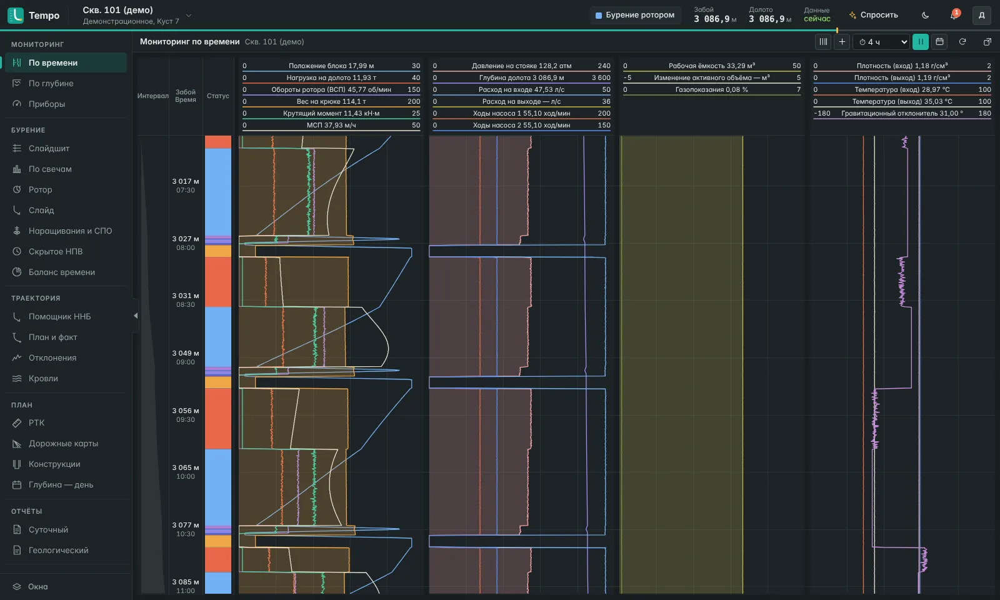
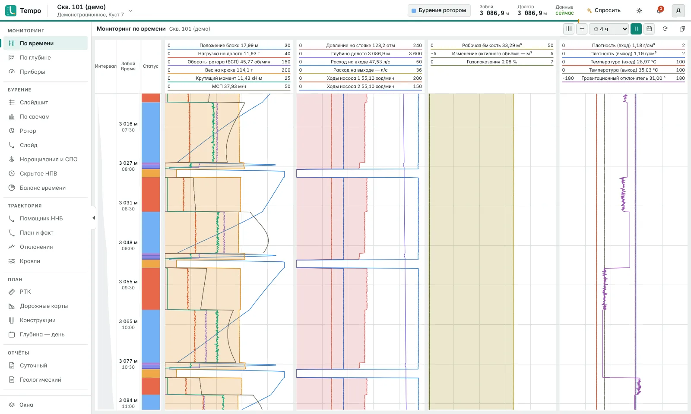
Все данные станции: от параметров бурения до хроматографа
Tempo принимает и хранит всё, что передаёт станция ГТИ и ННБ.
- Параметры бурения, каротаж и забойная механика ННБ
- Ёмкости и раствор, хроматограф, отчёты по раствору и долоту, примечания
- Профили под разные станции ГТИ; нестандартная станция подключается своим профилем
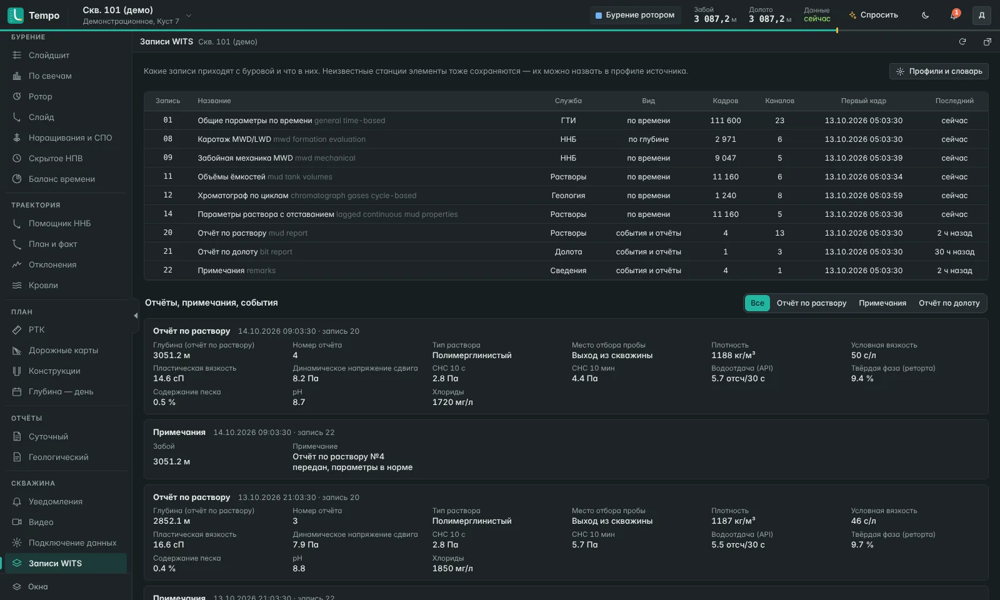
Скрытое НПВ: сколько часов ушло сверх норматива
Явный простой виден всем, а время, которое штатные операции заняли сверх нормы, обычно теряется. Tempo считает его сам.
- Операции буровой определяются автоматически: ротор и слайд, наращивания, СПО
- Наращивания «вес — вес» и «клинья — клинья» по сменам, аналитика по свечам, слайдшит
- Часы сверх норматива по сменам и видам работ, самые дорогие операции для руководителя
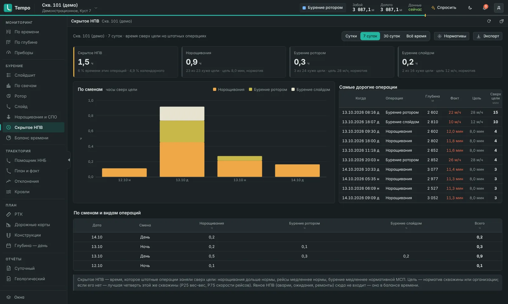
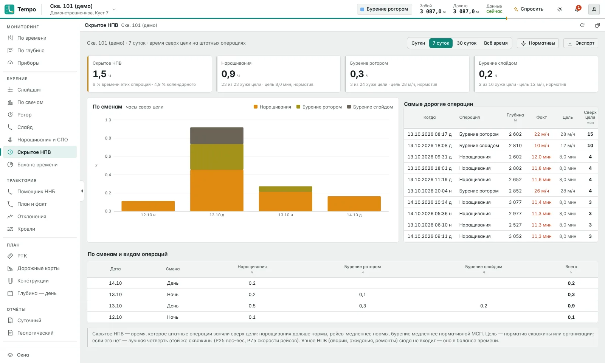
Помощник ННБ
Подсказки инженеру ННБ по фактическим данным этой скважины. Решение остаётся за инженером.
- Проекция на долото с учётом слайдов после последнего замера, отход от проекта
- Фактическая интенсивность двигателя и тенденция ротора по интервалам
- Подсказка следующего слайда: длина и отклонитель, прогноз попадания в цель
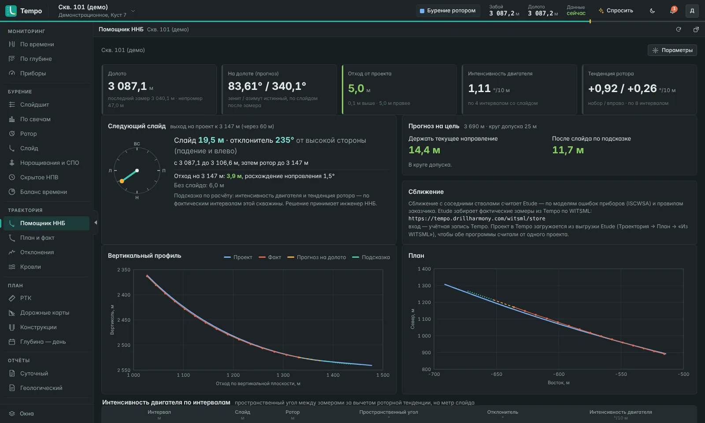
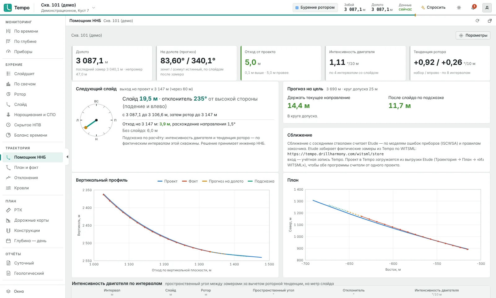
Траектория план/факт
Проект скважины загружается в Tempo, фактические замеры доступны другим системам.
- План и факт в 2D и 3D, кровли пластов, отклонения от проекта
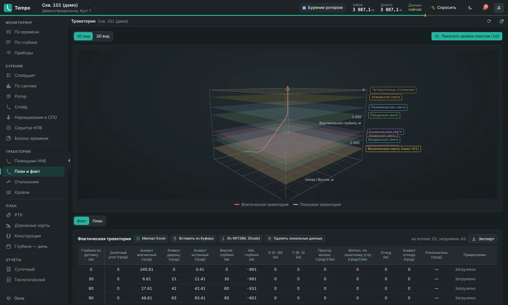
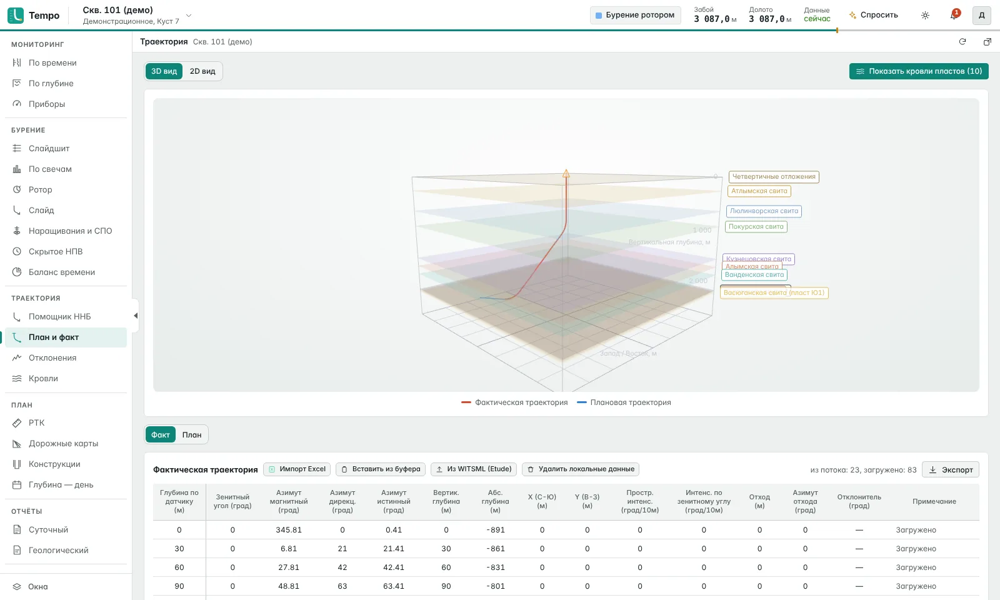
Суточный рапорт без ручного сбора
Баланс времени, проходка и операции за сутки собираются из данных станции.
- Суточный и геологический отчёт, выгрузка в Excel
- Черновик краткой сводки по расчётам Tempo; цифры считает программа
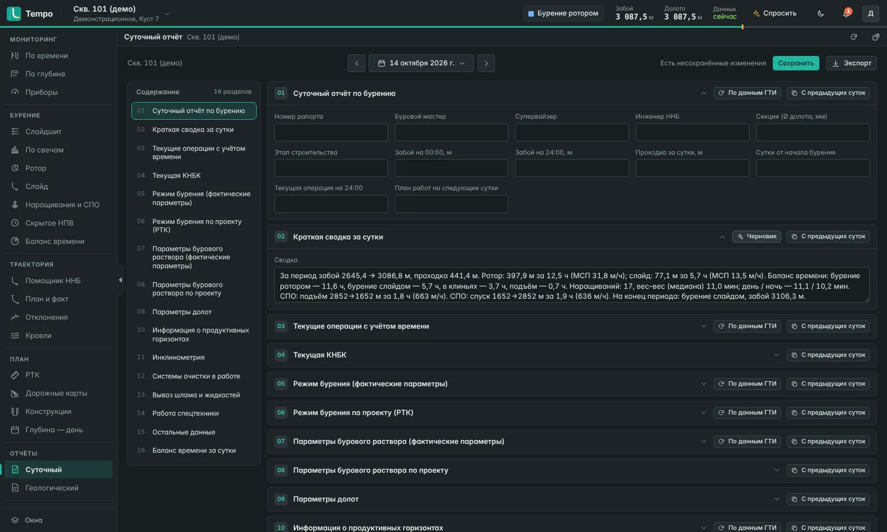
Tempo Box — сборщик на буровой
Отдельный блок для станций ГТИ и ННБ: подключили кабель от станции и сеть буровой, и данные пошли в Tempo. Ставить программу на компьютер станции не нужно.
- Данные станции ГТИ или телесистемы ННБ по кабелю или по сети; если у станции свой сервер, блок сам забирает с него каротаж и замеры инклинометрии
- Оба источника одновременно. При обрыве связи данные копятся (около трёх недель записи) и досылаются по порядку
- Блоку нужен только исходящий HTTPS к серверу Tempo. Запасной канал по желанию: 4G-модем, включается сам
- Три индикатора на крышке («передача», «буфер», «нет данных»), состояние видно без компьютера
- Ставится в станции ГТИ, у инженера ННБ или в вагончике, вне взрывоопасной зоны
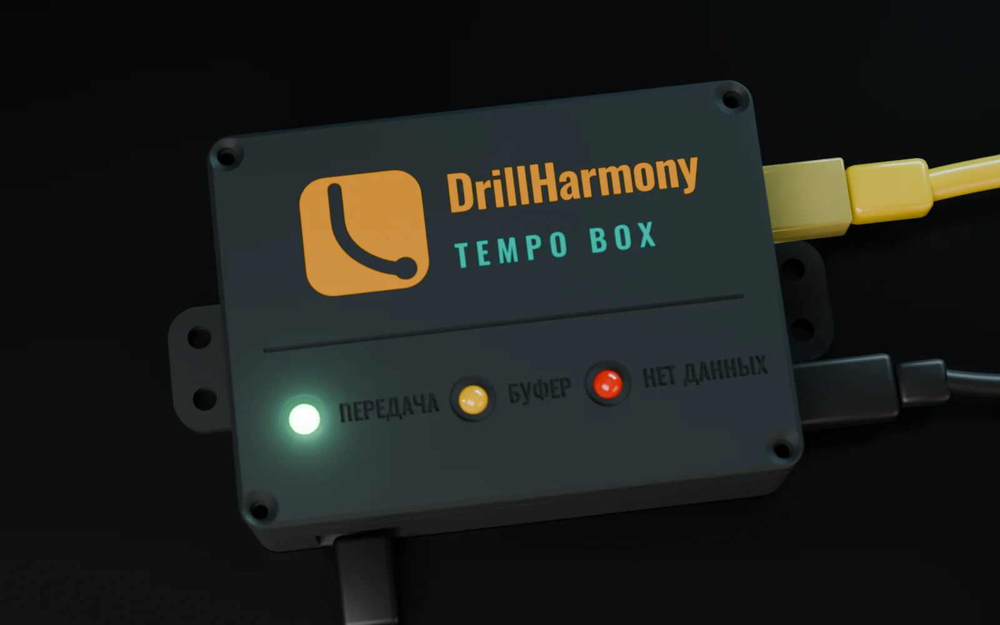
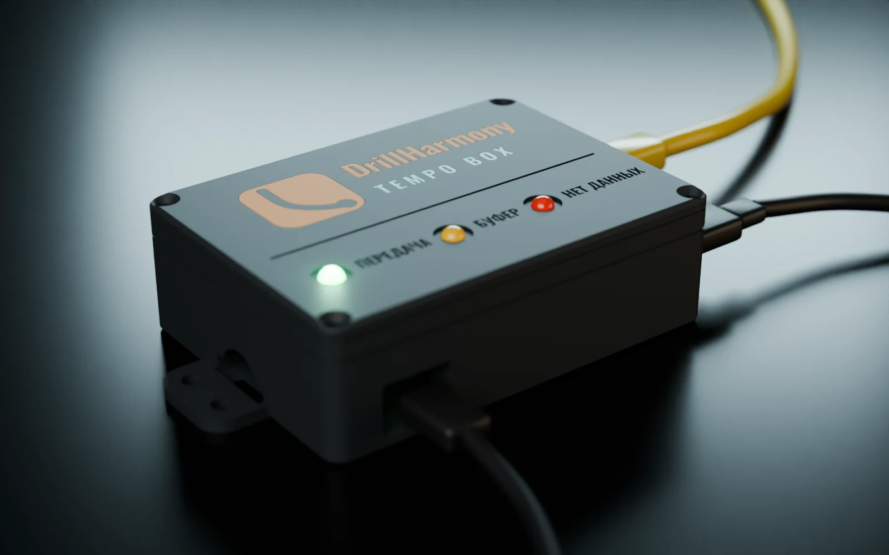
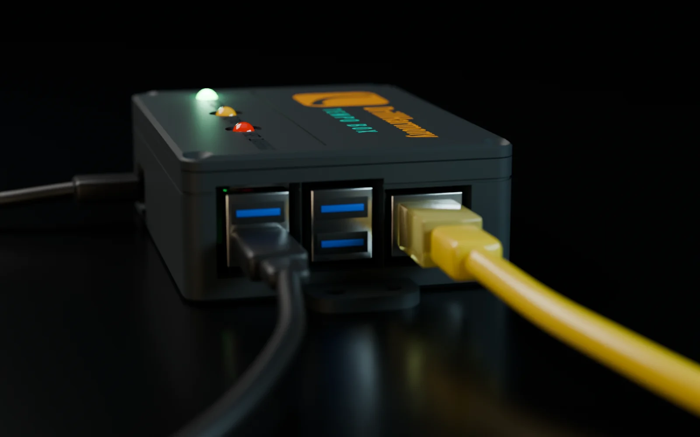
ИИ-помощник на выбор организации
Российские и зарубежные модели или локальная модель в контуре заказчика. Вопросы к скважине, разбор уведомления, черновик сводки. Цифры считает Tempo, модель только пишет текст; под каждым ответом видно, что ей отправлено.
Организации и доступ
У каждой компании своё пространство. Владелец назначает администраторов, сотрудникам открываются выбранные скважины, наблюдатель может только смотреть.
Обрывы связи
Сборщик на буровой копит данные, пока нет связи, и досылает их на сервер, когда связь восстановится.
От станции до браузера
Данные идут с буровой на сервер Tempo, а оттуда ко всем службам в браузер.
Блок Tempo Box принимает данные станции ГТИ и телесистемы ННБ по кабелю или сети. При обрыве связи данные копятся и досылаются.
Хранит данные, определяет операции, считает баланс времени и скрытое НПВ, отдаёт данные другим системам.
Мониторинг, помощник ННБ, траектория и суточный рапорт в браузере, без установки.
Частые вопросы о Tempo
Откуда Tempo получает данные?
Со станций ГТИ и ННБ через сборщик на буровой, по кабелю или по сети. Принимаются все данные станции: параметры бурения, ННБ, раствор, хроматограф, отчёты по раствору и долоту.
Что будет, если на буровой пропадёт связь?
Сборщик копит данные и досылает их на сервер по порядку, когда связь восстановится. Блок Tempo Box хранит около трёх недель данных и может переключаться на запасной 4G-модем.
Нужно ли ставить программу на компьютер станции ГТИ или ННБ?
Нет, если использовать Tempo Box: блок подключается к станции ГТИ или телесистеме ННБ кабелем RS-232 или по сети, а к Tempo через сеть буровой. Нужен только исходящий HTTPS.
Можно ли передать данные из Tempo в другие системы?
Да. Другие системы забирают из Tempo данные по стандартному протоколу: параметры бурения, каротаж, замеры инклинометрии.
Подойдёт ли наша станция ГТИ?
Стандартные станции подключаются сразу. Для нестандартной станции при подключении настраиваем свой профиль.
Что такое скрытое НПВ?
Время, которое штатные операции заняли сверх норматива: наращивания дольше нормы, рейсы медленнее нормы. Tempo считает его по сменам и видам работ. Явные простои учитываются в балансе времени отдельно.
Есть ли ИИ-помощник?
По выбору организации: российские и зарубежные модели или локальная модель в контуре заказчика. Цифры считает Tempo, модель только пишет текст: сводку, разбор уведомления, ответ на вопрос о скважине. Под каждым ответом видно, что ей отправлено. Тревоги дают правила, а не ИИ.
Кто видит данные скважины?
У каждой компании своё пространство. Владелец назначает администраторов, сотрудникам открываются выбранные скважины, наблюдатель может только смотреть.
Нужно ли что-то устанавливать в офисе?
Нет. Мониторинг открывается в браузере с любого устройства.
Как подключиться?
Подключение организации по запросу на info@drillharmony.com. Работаем в облаке DrillHarmony или, по желанию заказчика, устанавливаем Tempo на его сервер. Организацию заводит DrillHarmony, дальше компания сама добавляет сотрудников и настраивает им доступ: роли, скважины, ИИ.
Можно ли установить Tempo на наш сервер?
Да. По желанию заказчика устанавливаем Tempo на сервер компании, и данные с буровых остаются внутри её сети. Сборщики на буровой отправляют данные на этот сервер.
Tempo в работе
Откройте Tempo или напишите на info@drillharmony.com, и мы покажем мониторинг на демо-скважине.